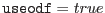

This task takes as input a housekeeping file from any of the instruments, and removes from it any `columns' whose data is determined to not be useful for subsequent data processing. It is assumed that which HK parameters are useful could change over the life of the mission. Thus the list of parameters to be retained is taken as an input to the task. The output of the task should be an OGIP compliant FITSfile, suitable for producing GTI files.
The TIME column of ODF compliant house keeping files will be a string in the format yyyy-mm-ddThh:mm:ss. In order for the HK data to be in a useful format for plotting, producing GTI files, etc., hkstrip will convert the TIME column of ODF files to seconds since the XMM reference time. Note that this conversion is done only for ODF files, ie. when the parameter . If the input to the task is an ODF file ( ), then the ODF directory (designated by an enviormental variable or on the command line) is searched for the file. In this case the set parameter can be either an ODF compliant file name, or an OAL style ODF file specification.
It would also be useful if this task could check all HK columns to see if they are constant throughout the HK data. If they are, the column could be deleted and replaced with a keyword value in the binary table extension, resulting in a potentially large space savings. This check could be fairly cpu intensive, and is not viewed as crucial to the task. Thus it is possible this feature may be deferred to a later version of the task.